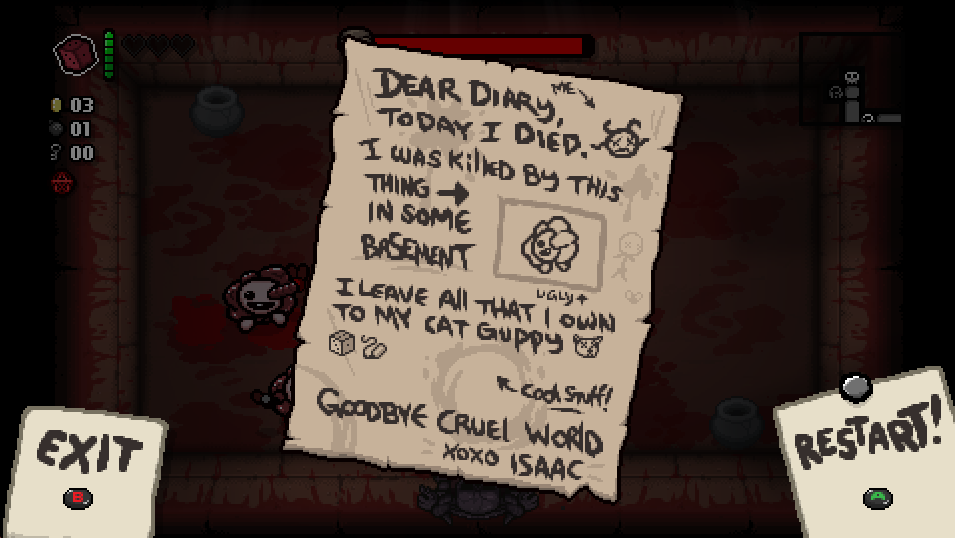

In the fall of 2020, independent studio Supergiant Games released their newest action role-playing game, Hades, and in turn struck gold. At the Game Awards that same year, Hades was nominated for Game of the Year and many other categories, with Supergiant Games taking home Best Indie Game and Best Action game. In Hades, the player takes the role of Zagreus, son of the titular Hades, who attempts to escape his fate as the prince of the Underworld by fighting up from the bottom layer of the Underworld all the way to the surface. Players find themselves engaged with elements of Greek mythology as they combat against legend-inspired monsters and converse with characters iconic in ancient literature. The biggest catch in Zagreus’ journey upwards, is when he finds failure in death, he is sent right back to his home in the Underworld and must try again, to the unrelenting disappointment of his father. The genre of Hades is best described by one word: roguelike. Roguelikes are traditionally gameplay-driven games, with enjoyment primarily stemming from using arcade-like permadeath and procedurally-generated level design to give a fresh experience every game session. Similarly in Hades, players experience this forever cycle of death as part of the core gameplay loop. However, the charm of Hades comes from the ability to use its game world and vibrant characters to round out the fast-paced action gameplay. Hades uses its historied narrative to build immersion, avoid the common pitfalls of other games in its genre, and create intrinsic rewards to become one of the best roguelikes to come out in recent years.
Immersing the player is one of Hades’ strong suits and is not created by one singular concept in the game’s design. One of the three facets of immersion listed by Jennett et al. (2008), is “Involvement and a sense of being in the task environment”. Immersion is scaffolded by several key factors in the expansive lore of the game world, to the moment to moment decisions the player makes during their run, contributing to Supergiant’s ability to create “The Magic Circle”. The world of Hades is well-written and expansive, backed by years of Greek mythos. In Hades, power-ups come in the form of “boons”, sent from Mount Olympus by characters representing the iconic Greek Gods. These short dialogues, in addition to environmental flavor text, allow Zagreus and the player to take a small break from combat and gain insight to the world around them.
Even though the gameplay setting for the entirety of the game is the different levels of the Underworld, dialogue from characters throughout involves the player in the story and lets them expand how they envision the game world as a whole. The combat system of Hades’ also tests the player’s spatial awareness as enemies and projectiles move around, meaning players are typically paying heavy attention to their surroundings during gameplay. The artists at Supergiant Games chose to have the artstyle of the gameworld geography to be colorful and cell-shaded, allowing the details of the environment to pop out and be appreciated by the player even during hectic combat.
Another way that Hades builds immersion is through giving players agency at every step of the journey out of the Underworld, as well as during downtime in the hub area. Defined by Filimowicz, in the context of video games, agency is expressed as: “the choices that a player makes during gameplay and the actions that they take" (Filimowicz n.d.) . During Hades’ main gameplay loop, there are two frequent moments where the player, diegetically from Zagreus’ point of view, must choose between multiple options, happening many times throughout one run. Firstly, whenever they get a boon from the Gods, a mechanic mentioned earlier, and when a room is cleared of enemies by the player.
These decisions not only allow the player to have freedom on how they want to drive their gameplay, but also happen frequently enough to allow the player to constantly make choices from Zagreus’ shoes, keeping their frame of mind within the magic circle. The magic circle is a theoretical concept from Ludens (Huizinga 2016) that describes the abstract space in which one is immersed in play. Specifically, Hades’ agency relates to the magic circle’s attribute of separation which “allows players to suspend their disbelief and immerse themselves in the game or play activity” (Filimowicz n.d.). Supergiant Games has taken great care to ensure the setting comes together to make the world of Hades immersive for the player through the bountiful environments, to intriguing characters and plot, to the endless gameplay choices as Zagreus’.
The roguelike genre is characterized by certain strengths, such as infinitely sprawling gameplay and the exciting high-stakes that comes with permadeath, to be touched upon later. However, roguelike games also find themselves with similar drawbacks to one another in shallow narratives as a result of a plot that must go on forever and the idea of dying once and losing all progress is understandably overwhelming for some. Hades’ clever intertwining of its narrative elements, action sequences, and downtime turns these genre-wide weaknesses into strengths and lets the game push the boundaries of what a roguelike can become. For the sake of comparison, Nicalis’ Binding of Isaac: Rebirth, another modern universally acclaimed roguelike game, will be used to compare and contrast with Hades. Parker (2017) explains the humbling aftermath of death in the typical roguelike as such: “Without the spectacle of beautiful, falling bodies to buoy them, the traditional roguelike player is left with two options: quit the game or restart with a new character, creating a new world to explore in the process.” Binding of Isaac: Rebirth is an example of this.
This can be frustrating to players for a few reasons. Focusing on the fact that it’s a very abrupt process, the most that some players see is that the gameplay just stops and that they have lost. Hades circumvents severing the connection between the player and gameplay through their avatar by not ending the gameplay loop completely, but instead transitioning to a different gameplay loop while the player processes the end of their run.
The House of Hades acts as the hub world of the game Hades, and is also Zagreus’ home within the story. Notice that the player is still in control of Zagreus after death, while in Binding of Isaac, the player is simply thrown into a menu, breaking immersion at the same time. The gameplay within the House of Hades gives the player the opportunity to casually converse with the characters there, as well as review their progressive upgrades and weapons before they begin another attempt to get out of the Underworld. This gameplay cycle between the main combat gameplay loop and the tranquil environment of the House of Hades also thematically lines up with Hades’ common motifs of life, death, and rebirth, subconsciously justifying its existence to the player. Importantly, every aspect of gameplay in Hades is explained through in-game flavor text or by the plot of the game.
Where Binding of Isaac: Rebirth and other games struggle is diegetically supporting the concepts behind procedurally-generated gameplay within their game world. As a result, each run in the Binding of Isaac: Rebirth is naturally comprehended by the player as multiple separate timelines where something different happens each time. Compared to Hades, where the plot gives reason as to why Zagreus can not truly complete his goal of leaving the Underworld and continues after the player's failures. Each of the player’s runs take place as one continuous canon within the game’s story instead of completely resetting the story each time the gameplay loop ends. Every attempt to escape the Underworld in Hades represents a single step in both the player’s and Zagreus’ long and satisfying journey.
Progression is an important part of almost every video game, and Hades is no exception. Rather than solely relying on a linear upgrade system, Hades also uses the traditional roguelike method of creating a learning environment for the player to gain mastery: “Roguelikes instead (often through procedural content generation) encourage players to learn about and experiment with a diverse range of tools and challenges in a comparatively unconstrained way.” (Wilson 2019). Hades, in particular, uses storytelling elements to create motivation and intrinsic rewards for the player to motivate a deeper understanding of the combat system. A recurring concept in Hades’ is the sheer amount of external doubt that Zagreus and the player faces from characters within the story as well as from non-diegetic elements.
Hades constantly shoves this messaging in the player’s face in such a way that motivates the player and aligns their goal with that of Zagreus, to escape the Underworld. Through poking at the player’s skill and purpose within the narrative, the game Hades makes the journey and end goal of beating the game so much more satisfying to the player and encourages them to gain skill in spite of the characters persistently sowing doubt. As previously mentioned, the House of Hades hosts a myriad of characters to converse with. The player, through Zagreus, can form bonds, represented by hearts, with these characters through repeated interaction over the course of several game sessions in Hades, providing little to no benefit during the main action gameplay. Social interaction in this format is seldom-seen in the typically gameplay-driven roguelike genre, but featured prominently in narrative-driven games such as Stardew Valley and the Mass Effect franchise. This emotional connection can cause some players to gain a preference of one character over another, and can drive players to make different decisions during gameplay. In an article by Burgess (2020) analyzing the different ways Mass Effect 2 players express their emotional attachments to the romanceable NPCs notes that: “it appears that some NPCs in the Mass Effect series could prompt an emotional attachment strong enough that players reflected on how they could use the game mechanics to further these emotional attachments for no tangible benefit.”
For example, Dusa is a romanceable character in which Zagreus can gain favor by gifting nectar, a persistent resource that can be gained during runs. Figure 12 above shows a decision between the aforementioned nectar, and the purple crystal currency called darkness, used to increase Zagreus own strength. Players with the intrinsic goal of developing a stronger relationship with Dusa, may end up prioritizing gaining nectar over more immediate tangible gameplay benefits simply out of affection for the character. This use of elements within the narrative to motivate the variety of intrinsic goals that players set for themselves deepens the overall Hades experience by being flexible to the different motivations that players may have during a game session.
Hades' narrative compliments and enhances the gameplay and lets it stand out among its many peers within the roguelike genre. Insightful writing and remarkable yet easily digestible aesthetics give the player an working idea of the game world and what it may look like beyond what can be seen, giving a feeling of a living busy environment. Contextual dialogue, detail-rich environments, and high player agency lets Hades create a sense of immersion to draw the player into the game’s setting. Contrasting and transitioning back and forth between the relaxed gameplay loop of the House of Hades with the fast-paced main combat loop allows the story to breathe and continue even after the player’s losses. In addition, every element within Hades’ gameplay is given a narrative reason for existing, letting the player build one overarching story piece by piece rather than repeating the same section of shallow plot ad nauseum à la traditional roguelikes. Hades’ story elements succeed in giving context to the players actions as well as creating intrinsic goals through witty messaging and charming characters to inspire players’ purpose throughout the game. All of these concepts work in the background to comprise the soulful world of Hades. Through utilizing narrative elements to immerse the player, mitigate the drawbacks of roguelike design, and give players the drive to complete the game by creating intrinsic goals, Hades has pushed the boundaries of what a roguelike can become.